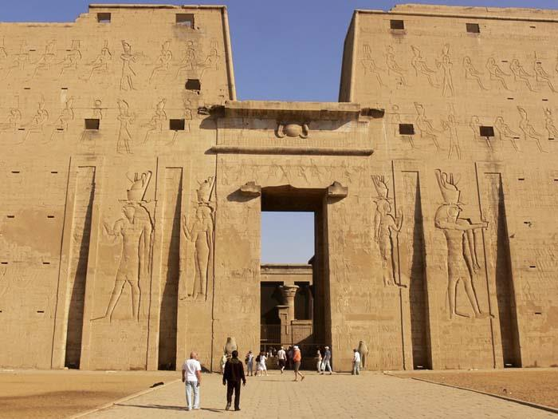
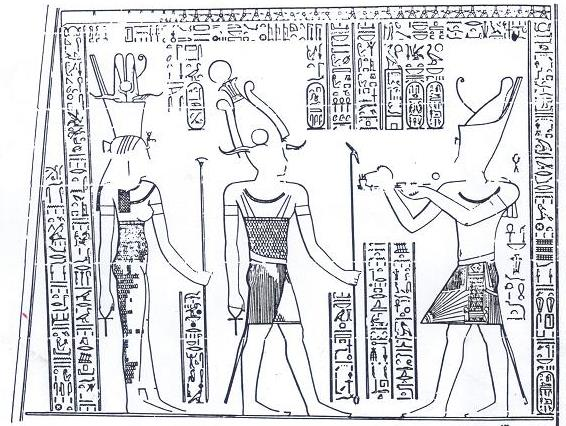
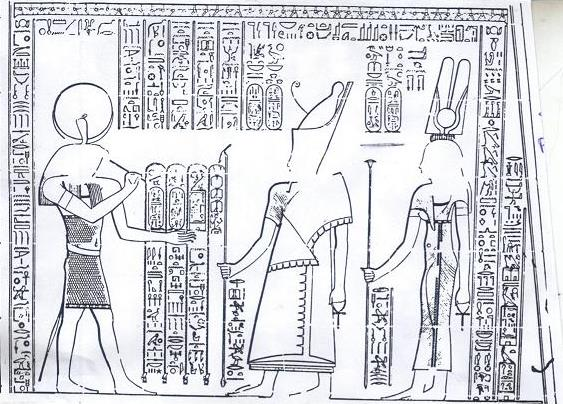
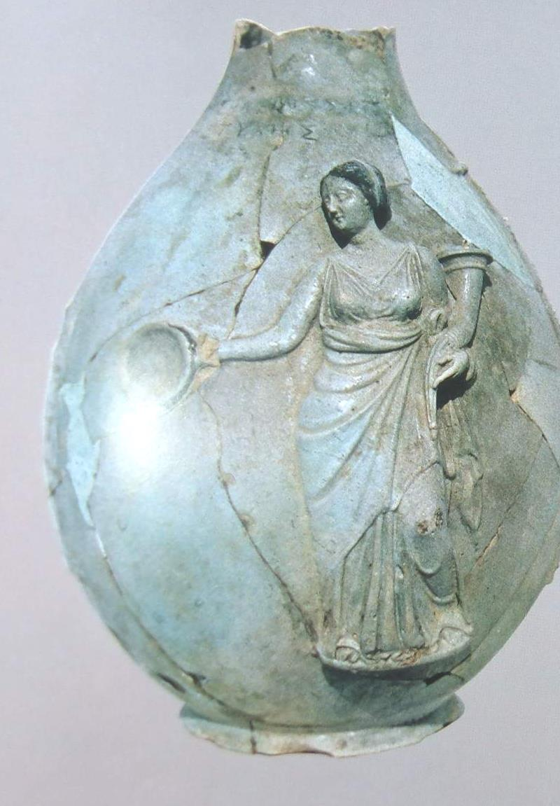

📖
قاموس ومصطلحات المحاضرة للمرشد (اضغط هنا لفتح / طي القاموس)
TOUR GUIDE BILINGUAL GLOSSARY
▼
قاموس ومصطلحات المحاضرة للمرشد (اضغط هنا لفتح / طي القاموس)
TOUR GUIDE BILINGUAL GLOSSARY💡 تنبيه للمرشد السياحي: هذه المصطلحات والكلمات مستخرجة من المنهج الأكاديمي المعتمد، ومزودة بالنطق الصوتي والمعنى السياقي للمرشد:
Euergetes
إيورجيتس (الخيّر / صانع الجميل / The Benefactor)
اللقب الرسمي لبطليموس الثالث، منحته إياه طبقة الكهنة المصريين بعد استعادته تماثيل الآلهة المصرية المقدسة التي نهبها الفرس وتوزيعه الغلال أثناء المجاعة.
Height / Zenith of Power
أوج وذروة القوة الإمبراطورية
المرحلة التي وصلت فيها دولة البطالمة إلى أقصى اتساع جغرافي وهيمنة عسكرية وبحرية في عهد بطليموس الثالث بعد فتوحاته في سوريا والعراق.
Third Syrian War
الحرب السورية الثالثة (حرب لاوديكي)
الحرب الكبرى التي شنها بطليموس الثالث ضد الملك السلوقي سلوقس الثاني ثأراً لاغتيال أخته برنيكي وابنها الرضيع، وانتهت بانتصار مصر الساحق.
Seleucia Pieria
سلوقية بييريا (ميناء أنطاكية)
الميناء البحري الاستراتيجي الحصين للعاصمة السلوقية أنطاكية على ساحل الشام الشمالي، تنازل عنه السلوقيون لمصر في صلح عام 241 ق.م.
Cambyses
قمبيز ملك الفرس الأخميني
الملك الفارسي الذي غزا مصر عام 525 ق.م ونهب تماثيل مقدسة لمعابدها، وظلت غائبة في بابل وبلاد فارس 300 عام حتى أعادها بطليموس الثالث.
Low Inundation
انخفاض فيضان النيل والشح
انخفاض منسوب مياه النيل في مستهل حكم بطليموس الثالث، مما سبب تلف المحاصيل ومجاعة أجبرته على إيقاف فتوحاته والعودة فوراً لإغاثة مصر.
Native Unrest / Rebellions
الثورات والاضطرابات الشعبية المصرية
تمردات وثورات مسلحة قام بها المصريون ضد الحكم الإغريقي في إقليم طيبة والصعيد، واجهها بطليموس الثالث بالقوة العسكرية الصارمة.
Temple of Horus at Edfu
معبد حورس في إدفو (237 ق.م)
أكمل المعابد المصرية القديمة حفظاً، وضع بطليموس الثالث حجر أساسه عام 237 ق.م، وتوقف بناؤه بسبب الثورات ولم يكتمل إلا عام 57 ق.م (بعد 180 عاماً).
Decree of Canopus
مرسوم كانوب (238 ق.م)
قرار مجمعي أصدره كهنة مصر في كانوب (أبو قير بالإسكندرية) لتمجيد بطليموس الثالث وزوجته برنيكي، وتضمن أول إصلاح للتقويم الشمسي بإضافة يوم كبيس.
Quarter Day / Leap Day
إضافة ربع يوم (السنة الكبيسة)
إضافة يوم كامل كل 4 سنوات للتقويم المصري (365 يوماً + ربع يوم) لمعالجة تزحزح فصول السنة والفيضان، وهي الفكرة التي أخذها يوليوس قيصر لاحقاً.
Cyrenaica
إقليم قورينائية (برقة في ليبيا)
الإقليم الليبي الشرقي الخصب الذي أعاد بطليموس الثالث ضمه رسمياً لمصر بعد زواجه من وريثته الشرعية الأميرة برنيكي الثانية ابنة الملك ماجاس.
Berenice II
الملكة برنيكي الثانية
زوجة بطليموس الثالث وملكة قورينائية ومصر، صاحبة النذر الشهير لآلهة أفروديت بقص شعرها لسلامة زوجها في حربه، وماتت مسمومة بأمر ابنها فيلوباتور.
Faience Oinochoe
إبريق الفيانس الطقسي (أوينوخوي)
إبريق خزفي فيانسي ذو فوهة لسكب الخمر والقرابين في طقوس عبادة الملكات البطلميات المؤلهات، وتظهر الملكة برنيكي الثانية وهي تقدم القربان (ص 47).
Trilingual Stela
اللوحة ثلاثية الخطوط واللغات
لوحة حجرية تذكارية منقوشة بثلاثة خطوط: الهيروغليفية (للكهنة والآلهة)، الديموطيقية (للشعب المصري)، واليونانية (للبلاط البطلمي)، كما في مرسوم كانوب.
ارتقاء العرش، إعادة توحيد مصر وبرقة، ومأساة اغتيال الأميرة برنيكي بسوريا
🇪🇬 الترجمة الأكاديمية والشرح التفصيلي للفقرة
ص ٤٤ بالكتاب• نسب الملك واعتلاء العرش (246 ق.م): بطليموس الثالث هو ابن الملك بطليموس الثاني فيلادلفوس من زوجته الأولى المنفية أرسينوي الأولى (مع تبنيه وتربيته من قِبل عمته وزوجة أبيه أرسينوي الثانية). تولى عرش مصر عام 246 ق.م وكان يبلغ من العمر حينها ثلاثين (30) عاماً.
• إعادة توحيد مصر وقورينائية (Cyrenaica): نجح بطليموس الثالث في إعادة توحيد مصر وإقليم قورينائية (برقة في شرق ليبيا) تحت تاج واحد؛ وذلك عبر زواجه الاستراتيجي من الملكة برنيكي الثانية (Berenice II)، وهي ابنة حاكم وملك قورينائية البطلمي «ماجاس» (Ptolemy Magas).
• جريمة اغتيال الأميرة برنيكي وابنها في آسيا الصغرى: فور اعتلائه العرش، وقعت مأساة دموية هزت العالم القديم؛ حيث كانت شقيقته «برنيكي» (Berenice Phernophoros) متزوجة من الملك السلوقي أنطيوخوس الثاني في إطار معاهدة سلام. وبعد وفاة أنطيوخوس الثاني المفاجئة، قامت طليقته الملكة لاوديكي بتدبير اغتيال الأميرة برنيكي البطلمية وقتل طفلها الرضيع في آسيا الصغرى للاستيلاء على العرش لصالح ابنها سلوقس الثاني.
• قسم الثأر وإعلان الحرب: أقسم بطليموس الثالث على الانتقام الدامي للغدر بأخته وابن أخته الرضيع؛ فحشد الجيوش والأسطول المصري وأعلن اندلاع الحرب السورية الثالثة (Third Syrian War).
ORIGINAL ENGLISH SOURCE
Ptolemy III (Euergetes)
246-221 BC
"The son of Ptolemy II from his wife Arsinoe I, he reunited Egypt and Cyrenaica and successfully waged the Third Syrian War against the Seleucid kingdom. Ptolemy III married Berenice II, the daughter of the Ptolemaic governor of Cyrene, Ptolemy Magas."
"Ptolemy III ascended the throne, he was 30 years old, his sister Berenice who was married to Antiochus II was killed with her son after the death of Antiochus II in Asia Minor as a result that he decided to revenge of murder of his sister and his nephew."
📜
استزادة للمرشد: ⚔️
حكاية للتاريخ والإرشاد: كيف فجرت جريمة اغتيال الأميرة برنيكي أعظم حروب الشرق؟
حكاية تاريخية
▼
كان زواج الأميرة البطلمية برنيكي من الملك السلوقي أنطيوخوس الثاني مصحوباً بمهر خيالي أسطوري جعلهم يلقبونها بـ «فيلق الذهب» (Phernophoros). وكان شرط والدها بطليموس الثاني أن يُطلق أنطيوخوس زوجته الأولى لاوديكي ويجعل العرش لأبناء برنيكي حصراً. لكن بمجرد وفاة بطليموس الثاني وأنطيوخوس عام 246 ق.م، دبرت لاوديكي مؤامرة مروعة، وحاصرت برنيكي في دافني بأنطاكية وقتلتها وذبحت طفلها الرضيع. وصل النبأ إلى الإسكندرية كالصاعقة، فامتطى الشاب بطليموس الثالث صهوة جواده على رأس أضخم جيش مصري خرج منذ عهد تحتمس الثالث، قاصداً سحق العرش السلوقي ثأراً لدم أخته.
الحرب السورية الثالثة، بلوغ بابل وقمة المجد، واسترداد تماثيل مصر من الفرس
🇪🇬 الترجمة الأكاديمية والشرح التفصيلي للفقرة
ص ٤٤ بالكتاب• الزحف نحو آسيا الصغرى وهزيمة سلوقس الثاني: قاد بطليموس الثالث حملته العسكرية الكاسحة إلى آسيا الصغرى حيث ألحق هزيمة مدوية بالملك السلوقي «سلوقس الثاني» في معركة كبرى (رغم قلة السجلات التفصيلية عن تكتيكات المعركة).
• سقوط أنطاكية والوصول إلى بابل: احتلت الجيوش المصرية العاصمة السلوقية أنطاكية (Antioch)، وواصل بطليموس الثالث زحفه المظفر عابراً نهري دجلة والفرات حتى بلغ أسوار بابل (Babylon) في بلاد ما بين النهرين.
• معاهدة السلام (241 ق.م) وميناء سلوقية بييريا: في مقابل إبرام معاهدة السلام عام 241 ق.م، مُنحت مصر أراضي وموانئ جديدة بالغة الأهمية على الساحل الشمالي لسوريا، وأهمها ميناء سلوقية بييريا (Seleucia Pieria) وهو الميناء البحري الرئيسي لأنطاكية، لتصل المملكة البطلمية إلى ذروة قوتها ونفوذها العسكري والتجاري.
• استرداد تماثيل الآلهة المصرية ولقب «الخيّر» (Euergetes): في أعظم عمل رمزي في التاريخ الديني البطلمي، عثر بطليموس الثالث في بابل وبلاد فارس على تماثيل الآلهة المصرية المقدسة التي كان الملك الفارسي قمبيز (Cambyses) قد نهبها وسلبها من معابد مصر قبل 300 عام؛ فأعادها بطليموس باحتفال مهيب إلى معابدها الأصلية في مصر! وهذا العمل هو السبب الرئيسي الذي جعل كهنة وشعب مصر يمنحونه لقب «إيورجيتس» (صانع الجميل والخير / Benefactor).
ORIGINAL ENGLISH SOURCE
"Ptolemy III started the third Syrian War. He went to Asia Minor where he defeated Seleucus II in famous battle but unfortunately very little is recorded about the battle itself. He occupied Antioch and even reached Babylon."
"In exchange for a peace in 241 BC, Ptolemy was awarded new territories on the northern coast of Syria, including Seleucia Pieria, the port of Antioch. The Ptolemaic kingdom reached the height of its power. Ptolemy III brought with him the Egyptian statues which Cambyses had taken 300 years ago."
📜
استزادة للمرشد: 🏺
حكاية للتاريخ والإرشاد: كيف حول بطليموس الثالث غنائم بابل إلى نصر روحي للمصريين؟
حكاية تاريخية
▼
حين دخل الجيش البطلمي مدينة بابل، لم يكن بطليموس الثالث يبحث فقط عن الذهب، بل سأل عن الخزائن الملكية الفارسية التي كُدست فيها غنائم قمبيز وخشايارشا عندما دنسا معابد منف وطيبة ونهبا تماثيل بتاح وآمون ورع قبل ثلاثة قرون كاملة. وحين وجد تلك التماثيل المقدسة سالمة، حملها على قوافل ضخمة محروسة بالفرسان وعاد بها نحو وادي النيل. استقبلته طبقة الكهنة المصريين بدموع الفرح والزغاريد، ورأوا فيه الملك الشرعي الحامي لعقيدة الأجداد ولقبوه بـ «إيورجيتس» (المحسن صانع الخير العظيم).
انخفاض فيضان النيل، ثورات الصعيد، والبدء في تشييد معبد حورس بإدفو (237 ق.م)
🇪🇬 الترجمة الأكاديمية والشرح التفصيلي للفقرة
ص ٤٤ - ٤٥ بالكتاب• أزمة الفيضان والاضطرار للانسحاب: رغم انتصاراته الكاسحة في آسيا الصغرى وبابل؛ أُجبر بطليموس الثالث على وقف فتوحاته والعودة على وجه السرعة إلى مصر؛ بسبب اندلاع اضطرابات وتمردات شعبية داخلية (Native unrest)، وتهديد الأمن الداخلي للبلاد نتيجة انخفاض فيضان النيل (Low inundation) وحدوث أزمة غلال ومجاعة وشيكة.
• إغاثة الشعب بالغلال والقمع العسكري: وزّع الملك كميات ضخمة من القمح والذرة (Wheat and corn) التي جلبها معه من غنائم ومشتريات آسيا الصغرى مجاناً وبأسعار مدعومة على المصريين لإنقاذهم. لكنه في الوقت ذاته استخدم القوة العسكرية الباطشة لإخماد وسحق الثورات والتمردات؛ ولذلك لم يحظَ بتأييد ودعم شعبي كامل من عموم المصريين.
• تأسيس معبد حورس الخالد في إدفو (237 ق.م):
- في مصر العليا، أضاف بطليموس الثالث منشآت لمعابد الكرنك، وبدأ في 23 أغسطس 237 ق.م وضع حجر الأساس لتشييد معبد حورس في إدفو (Temple of Horus at Edfu).
- يُعد معبد إدفو أعظم وأكمل نموذج للمعابد المصرية الوطنية التي أعاد البطالمة بناءها وتوسعتها كأثر معماري متكامل وفخم.
- توقف البناء بسبب ثورات الصعيد: توقف برنامج البناء في إدفو لسنوات طويلة نتيجة الثورات الوطنية التي اندلعت في إقليم طيبة والصعيد ضد الحكم البطلمي، ولم يكتمل المعبد نهائياً إلا عام 57 ق.م في عهد الملك بطليموس الثاني عشر أوليتس (أي استغرق تشييده قرابة 180 عاماً!).
- كما استكمل الأعمال المعمارية في معبد فيلة التي بدأها والده فيلادلفوس، وشيد بوابة ضخمة جنوب طيبة.
ORIGINAL ENGLISH SOURCE
"Ptolemy III achieved some military success with his conquest of the Seleucid empire in Asia Minor and his advance on Babylonia, but he was forced to return to Egypt because of native unrest, and the eternal security was in danger as a direct result of the low inundation of the Nile, he distributed the wheat and corn which had brought back with him from Asia Minor among the Egyptians."
"Ptolemy III used force to put down some of the revolts which took place in Egypt therefore this king never had any popular support from the Egyptians."
"In Egypt Ptolemy III added to the Temple of Karnak, and began the Temple of Horus at Edfu in 237 BC. This is one of the finest examples of those native temples that the Ptolemies either substantially reconstructed or built as a new monument. The building programmed at Edfu was stopped because of the native rebellions in the Theban district, and the temple was only completed in 57 BC. He completed the work at Phila temple which was started by his father Ptolemy II Philadelphus, moreover he built a gate to the south of Thebes."
📜
استزادة للمرشد: 🏛️
حكاية للتاريخ والإرشاد: لغز الـ 180 عاماً في تشييد معبد حورس بإدفو
حكاية تاريخية
▼
معبد إدفو ليس مجرد معبد سياحي يزوره الملايين، بل هو سجل حجري ناطق لصراع الحكم في مصر الهلنستية! حين وضع بطليموس الثالث حجر الأساس عام 237 ق.م، أراد بناء أعظم صرح لحورس المنتقم لأبيه أوزير. لكن بعد وفاته بقليل، اندلعت ثورة الصعيد الكبرى بقيادة ملوك مصريين وطنيين (حور ونفر وعنخ ونفر) حكموا طيبة والصعيد واستقلوا عن الإسكندرية قرابة عشرين عاماً؛ فتوقفت أعمال النقش والبناء تماماً وغطت الرمال أجزاءً من الجدران. ولم يستأنف العمل إلا بعد سحق الثورات تدريجياً، ليتتابع عليه ملوك البطالمة ملكاً بعد آخر حتى وضع بطليموس الثاني عشر (والد كليوباترا) اللمسات الأخيرة وأبواب الأرز والبرونز عام 57 ق.م!
مرسوم كانوب (238 ق.م)، ابتكار السنة الكبيسة، ونهاية الحكم ووفاته (221 ق.م)
🇪🇬 الترجمة الأكاديمية والشرح التفصيلي للفقرة
ص ٤٥ و ٤٧ بالكتاب• إصلاح التقويم المصري العتيق (السنة الكبيسة): أدرك بطليموس الثالث وعلماء الفلك بالإسكندرية أن التقويم المصري القديم (365 يوماً مقسمة لـ 12 شهراً + 5 أيام نسيء) يعاني من عيب فلكي؛ حيث ينقص ربع يوم سنوياً عن الدورة الشمسية الحقيقية (365.25 يوماً)، مما يؤدي لتزحزح فصول السنة وأعياد الآلهة يوماً كاملاً كل أربع سنوات.
• إضافة ربع يوم (Quarter day) كل عام: قرر الملك رسمياً إضافة ربع يوم لكل عام (أي إضافة يوم سادس لأيام النسيء كل أربع سنوات، وهو الأساس الفلكي لما يُعرف بـ السنة الكبيسة - Leap Year).
• لوحة ومرسوم كانوب الثلاثي (Canopus Stela - 238 ق.م): سُجل هذا الإنجاز الفلكي والقرارات الدينية والملكية على لوحة حجرية شهيرة أُقيمت في كانوب (Canopus - أبو قير الحالية بالإسكندرية)، ودُونت بثلاثة خطوط: الهيروغليفية، والديموطيقية، واليونانية (لتكون السلف المباشر لحجر رشيد!).
• محاولة إعادة تنظيم الإدارة: قرر بطليموس الثالث إعادة تنظيم الجهاز الإداري المصري المترامي، لكن هذه المهمة الشاقة كانت تفوق طاقته وقدرات البلاط ("this job was too much for him").
• طقوس عبادة برنيكي الثانية وأواني الفيانس (ص 47): ترسخت عبادة الملكة المؤلهة برنيكي الثانية في الإسكندرية، واستُخدمت أواني وإبريق الفيانس الطقسية (Faience Oinochoai) لسكب الشراب وإقامة طقوس القرابين للملكة الحامية.
• وفاة الملك (221 ق.م): توفي بطليموس الثالث عام 221 ق.م بعد حكم دام نحو 25 عاماً، ليخلفه ابنه المنغمس في الملذات الملك بطليموس الرابع فيلوباتور.
ORIGINAL ENGLISH SOURCE
"Ptolemy III followed some external policy of his father, he recognized the Egyptian calendar by adding a quarter day of a day to each year, he recorded this act on a stela set up at Canopus, and it was inscribed in hieroglyphic, Greek, and Demotic."
"Ptolemy III decided to reorganize the Egyptian administration but this job was too much for him. He died in year 221 BC after ruling Egypt for about 25 years."
📜
استزادة للمرشد: 🌌
حكاية للتاريخ والإرشاد: حجر كانوب وأسطورة «خصلة شعر برنيكي» في السماء!
حكاية تاريخية
▼
حين خرج بطليموس الثالث في حربه السورية الخطيرة، نذرت زوجته الحسناء برنيكي الثانية أنها إذا عاد زوجها سالماً منتصراً ستقص شعرها الذهبي وتقدمه قرباناً في معبد أفروديت-أرسينوي بزفيريون (شرق الإسكندرية). وبالفعل عاد الملك منتصراً، فنفذت نذرها وقصت ضفائرها! لكن الشعر اختفى من المعبد في اليوم التالي، فغضب الملك؛ فسارع الفلكي البلاطي «كونون الساموسي» لإنقاذ الموقف، وأعلن أنه رأى خصلات شعر الملكة في السماء وقد رفعتها الآلهة لتصبح كوكبة نجوم جديدة! ومنذ ذلك الحين تخلد خرائط الفلك العالمية كوكبة تُعرف بـ «خصلة شعر برنيكي» (Coma Berenices). وفي العام التالي (238 ق.م)، أصدر الملك مرسوم كانوب الخالد مضيفاً اليوم الكبيس للتقويم، ليثبت أن علماء الإسكندرية هم سادة الفلك في العالم القديم.
🖼️ الشواهد الأثرية والنقوش الأصلية من كتاب المادة (ص ٤٦ - ٤٧)
الصور والنقوش الأثرية الأصلية المستخرجة مباشرة من الكتاب الجامعي للدكتورة مرفت ماهر أمين والخاصة بالمحاضرة السادسة:

صرح معبد حورس في إدفو
الصرح الشامخ لمعبد حورس في إدفو، الذي بدأ بطليموس الثالث بناءه عام 237 ق.م كأكمل معبد بطلمي محفوظ بالكامل في مصر.

بوابة بطليموس الثالث بالكرنك (سجل 2)
الوجه الخارجي للممر، السجل الثاني، يمثل بطليموس الثالث في طقوس تقديم القرابين والولاء لآلهة طيبة العظام.

بوابة بطليموس الثالث بالكرنك (سجل 3)
الوجه الخارجي للممر، السجل الثالث، يُظهر تفاصيل الأزياء والشعائر الملكية البطلمية المنقوشة على الحجر الرملي الأقصري.

إبريق الفيانس للملكة برنيكي الثانية
إبريق (Oinochoe) أثري نادر من الفيانس يُجسد طقوس سكب القرابين لعبادة الملكة برنيكي الثانية المؤلهة (دراسة طومسون، أكسفورد).
افتح تدريبات وأسئلة الدرس
🎯 بنك الأسئلة التدريبي التفاعلي للمحاضرة السادسة (10 أسئلة)
مُعد طبقاً لنص ومصطلحات د. مرفت ماهر أمين — اختيار من متعدد مع التصحيح الفوري والشرح النموذجي.
نتيجة التقييم الفوري
أجب عن الأسئلة واضغط «تصحيح الاختبار» لإظهار نتيجتك وملاحظات المراجعة.